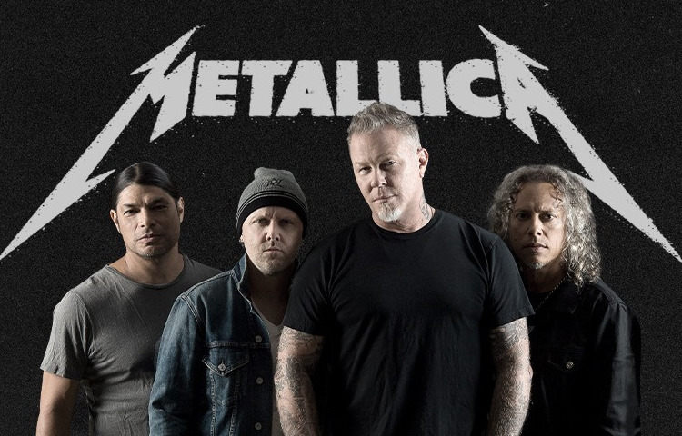

Metallica - американская метал-группа, основанная в 1981 году. Она является одной из самых влиятельных и известных групп в треш-метале. Многие сомневаются в ее трешевости из-за довольно мелодичных песен и изменений в стиле с каждым новым альбомом. Однако я продолжаю ее любить, эта группа стала по-настоящему родной для меня.